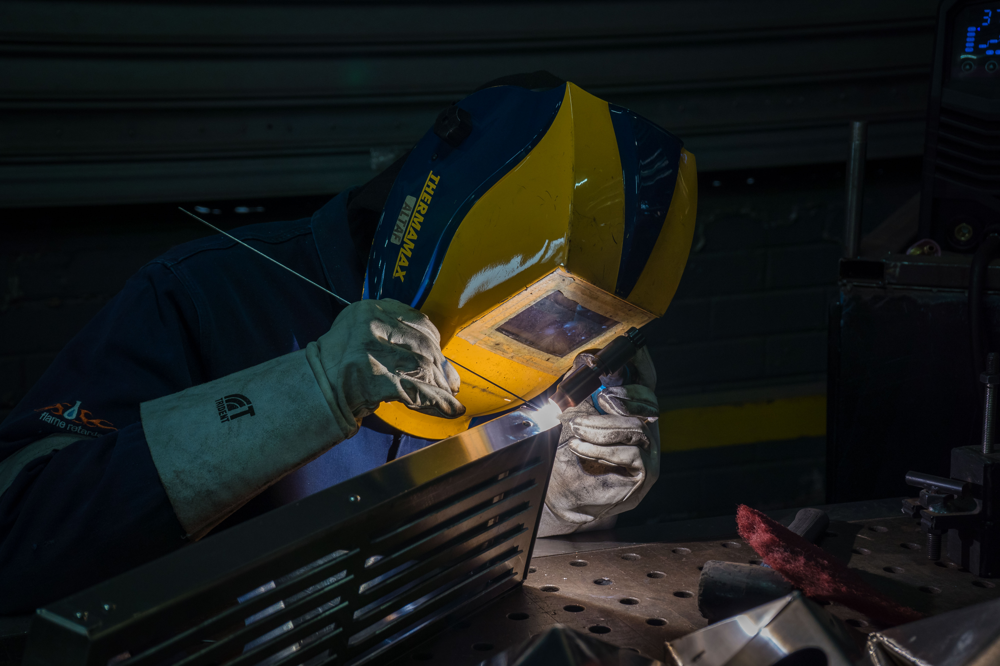
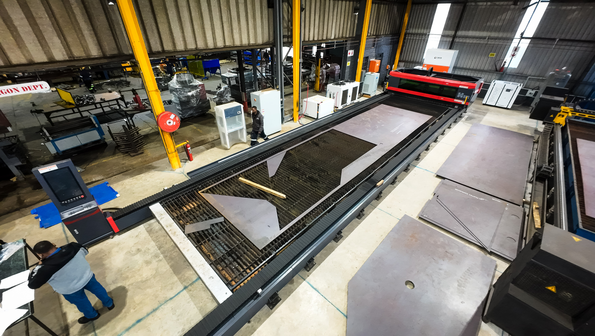
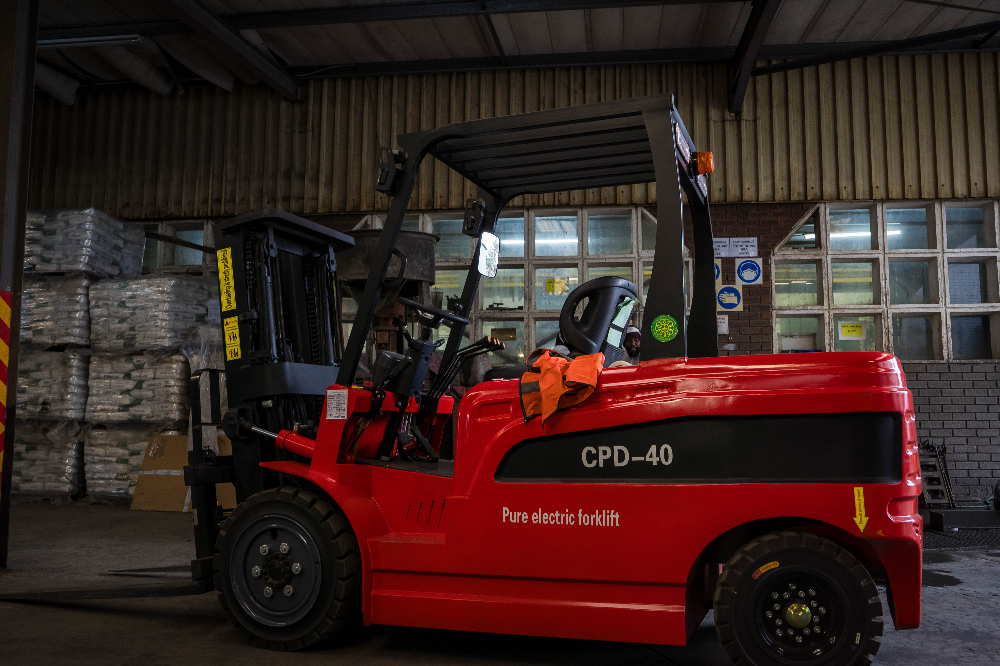
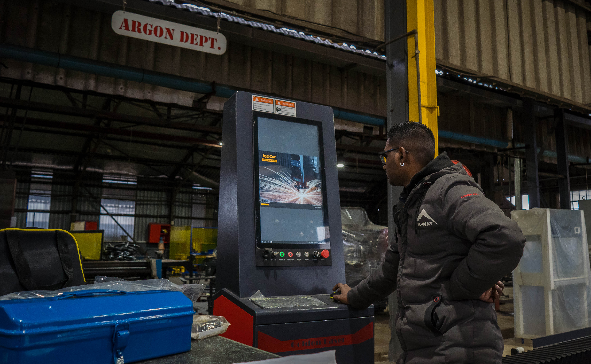
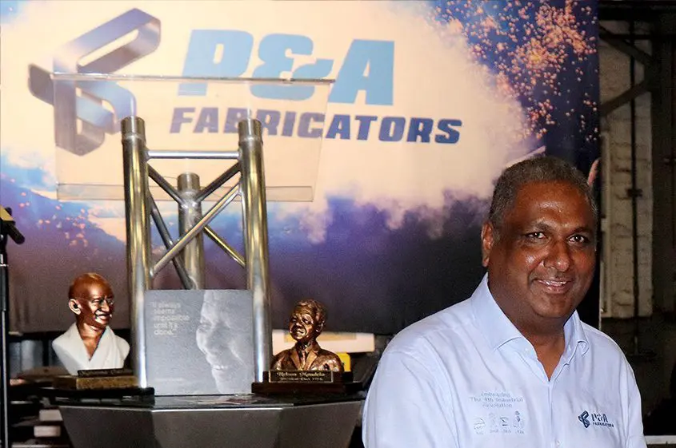

About P&A
Over 50 years of precision, craft, and engineering excellence in South Africa's industrial heartland.
A Legacy of Precision
Pinion & Adams Fabricators was established in 1971, building its reputation on the craftsmanship and dedication of its founders. In 1975, the Davies family acquired the business, bringing new energy and a long-term vision for growth that would see P&A evolve into one of South Africa's most capable and trusted fabrication houses.
Under the leadership of Gerald Anthony, P&A entered a new era of operational excellence. Gerald drove the company's ISO 9001:2015 certification — a commitment to measurable quality standards across every process. In 2007, P&A became the first company in Africa to implement MIE Trak, an advanced electronic manufacturing tracking system that brought complete production transparency to every job.
Today, P&A operates from Durban and Johannesburg, serving South Africa's leading industrial, transport, and infrastructure sectors. Our clients include MAN, Bell Equipment, Cash Connect Group, ND Engineering, Bosch Projects, and iconic landmark developments including Gateway Theatre of Shopping and Sun Coast Casino.
Key Milestones
1971
Founded
Pinion & Adams Fabricators established, building a reputation for precision sheet metal work in KwaZulu-Natal.
1975
Davies Family Acquisition
The Davies family acquires P&A, bringing long-term investment in people, equipment, and quality systems.
Early 2000s
ISO 9001 Certification
P&A achieves ISO 9001 quality management certification — a formal commitment to consistent, measurable quality at every stage of production.
2007
First in Africa — MIE Trak
P&A becomes the first company in Africa to implement MIE Trak electronic manufacturing tracking, revolutionising job visibility and production management.
2010s
Training Academy Established
P&A launches the Sheet Metal Training Academy — QCTO and MERSETA accredited, and the first of its kind in South Africa.
2015
ISO 9001:2015 Upgrade
P&A upgrades to the latest ISO 9001:2015 standard, reflecting a risk-based, continual improvement approach to quality management.
Today
50+ Years Strong
P&A continues to grow, serving South Africa's top industrial clients from facilities in Durban and Johannesburg — precision-built for the next 50 years.
Vision, Mission & Values
Vision
To be the most trusted and technically capable sheet metal fabrication company in South Africa, recognised for precision, reliability, and the development of our people.
Mission
To deliver precision-engineered fabrication solutions that exceed client expectations — on time, to specification, and backed by an ISO 9001:2015 quality system that governs every stage of production.
Values
Precision in every component. Integrity in every commitment. Investment in our people. Continuous improvement in every process. Proudly South African in everything we do.





Gerald's Story
Gerald Anthony joined P&A as a young apprentice, learning the trade from the ground up. His passion for precision and his belief in the dignity of skilled work shaped every role he held as he rose through the company.
As Managing Director, Gerald has been the driving force behind P&A's transformation into a modern, technology-forward fabrication house. His decision to pursue ISO 9001 certification and to implement MIE Trak ahead of any other African company reflected a belief that quality must be built into every system — not inspected in at the end.
Gerald's greatest legacy may be the Training Academy. Recognising the skills gap threatening South Africa's manufacturing sector, he championed the establishment of an accredited sheet metal training programme — ensuring that P&A contributes not just products, but people, to South Africa's industrial future.
in Africa
MIE Trak Implementation — 2007
In 2007, P&A became the first company in Africa to implement MIE Trak — an advanced electronic manufacturing tracking system that monitors every job from enquiry through to delivery, including a full bill of materials.
Every job entered into our system receives a unique tracking number. At any point, you can know exactly where your components are in the production cycle. This level of transparency is not a feature — it is our standard.